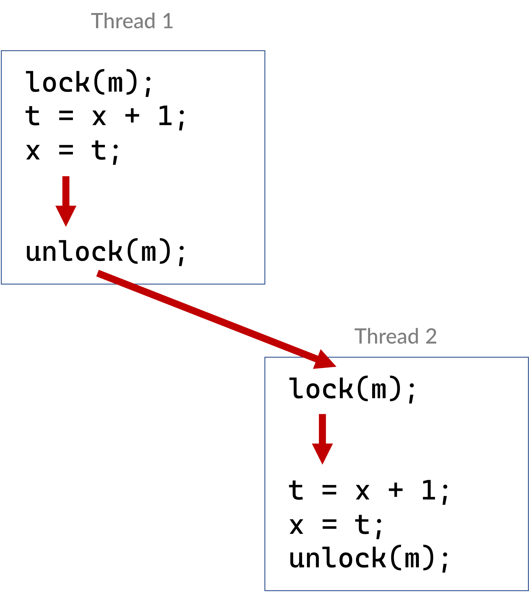

Typy i zmienne atomowe#
Problemy architektur wieloprocesorowych#
Cache coherency#
Wątki T1 i T2, wykonywane na różnych procesorach/rdzeniach odczytują dane A i B, które znajdują się w tej samej linii cache’a L2. Jeśli następnie wątek T1 modyfikuje wartość A, to modyfikacja jest najpierw dokonana w cache’u L2 procesora na którym pracuje wątek. Powstaje problem, ponieważ wątek T2 pracuje na innym procesorze, który w swoim cache’u ma nieaktualną już wartość danej A. Cache stają się niekoherentne i należy je uaktualnić. Za spójność cache odpowiedzialny jest protokół MESI.
False sharing#
Mechanizm gwarantujący spójność danych w cache’ach może czasami znacznie spowolnić działanie aplikacji wielowątkowej. Jeśli pracujące wątki nie współdzielą danych, lecz dane te fizycznie leżą blisko siebie, to mogą one znaleźć się na tej samej lini cache’a w procesorach. W rezultacie jakakolwiek modyfikacja stanu zmiennych (teoretycznie niezależnych od siebie) wymusza inwalidację cache’ów.
Memory consistency#
Protokół spójności cache’a nie daje gwarancji, kiedy modyfikacja wartości (operacja zapisu nowego stanu) zostanie zakończona. Powstaje pytanie: kiedy uaktualniona przez jeden wątek wartość będzie widoczna w pozostałych wątkach pracujących na innych procesorach. W zachowaniu spójności pamięci pomocny jest model pamięci wprowadzony w C++11.
Kluczowe pojęcia#
Spójność sekwencyjna - Sequential consistency#
“The result of any execution is the same as if the reads and writes occurred in some order, and the operations of each individual processor appear in this sequence in the order specified by its program”
—Leslie Lamport, 1979
Spójność sekwencyjna w programach wielowątkowych, które są wykonywane na maszynach wieloprocesorowych wymaga generowania dodatkowych ograniczeń dotyczących operacji na pamięci (np. barier pamięci - memory fence). Ponieważ ograniczenia te znacznie obniżają wydajność często wymagane jest poluzowanie tych ograniczeń przy zachowaniu prawidłowego (thread-safe) przebiegu programu.
Wyścig - Race condition (data race)#
W sytuacji, kiedy ewaluacja jednego wyrażenia zapisuje wartość zmiennej (memory location) i jednocześnie inne ewaluowane wyrażenie modyfikuje lub odczytuje tą samą zmienną, powstaje konflikt. Program, który posiada dwie konfliktowe ewaluacje wyrażeń jest w sytuacji wyścigu (data race), chyba, że:
oba wyrażenia są operacjami atomowymi (
std::atomics)jedno z wyrażeń poprzedza (happens-before) drugie (
std::memory_order)Warning
Jeśli w programie pojawia się wyścig (data race), zachowanie programu staje się niezdefiniowane (undefined behaviour)
Relacja happens-before#
Dostęp do pamięci (memory access) A poprzedza (happens-before) B, jeżeli:
A poprzedza B w programie
A i B są operacjami synchronizującymi i B obserwuje rezultat A, narzucając kolejność operacji
Przykład: A zwalnia muteks m, B następnie pozyskuje muteks m

lub istnieje C takie, że A poprzedza (happens-before) C i C poprzedza B
Dwie operacje dostępu do pamięci (memory location) A i B biorą udział w wyścigu (data race), jeżeli:
A nie poprzedza B
ani B nie poprzedza A
{kind=link}
Transformacje programu#
Analizę kodu wielowątkowego komplikuje fakt, że kod wykonywany może zostać poddany transformacji.
Note
Transformacje to zmiana kolejności zapisów i odczytów.
Transformacje mogą zachodzić na dowolnym poziomie:
Kod źródłowy
optymalizacja dokonana przez kompilator
reorganizacja operacji odczytów i zapisów
Wykonanie
procesor + cache
buforowanie operacji zapisu
Przykłady transformacji powodującej undefined behaviour#
Busy wait#
bool done;
int x;
x = 42;
done = true;
while (!done) {}
assert(x == 42);
Kompilator może przetransformować ten kod do postaci:
x = 42;
done = true;
tmp = done;
while (!tmp) {};
assert(x == 42);
Ewentualnie kompilator lub hardware (ARM, PowerPC) mogą dokonać następującej transformacji:
done = true;
x = 42;
while (!done) {}
assert(x == 42);
Algorytm Dekker’a#
int flag1 = flag2 = 0;
flag_1 = 1 // (a)
if (flag_2 != 0) // (b)
// contention
else
// critical section
flag_2 = 1 // (c)
if (flag_1 != 0) // (d)
// contention
else
// critical section
Ochrona przed wyścigiem (data-race protection)#
C++11 umożliwia uniknięcie wyścigu poprzez stosowanie:
Blokad (muteks + menadżer blokady)
Obiektów atomowych
operacje wykonywane na zmiennych atomowych:
są niepodzielne - żaden inny wątek nie może zobaczyć pośredniego stanu operacji atomowej
wprowadzają mechanizm synchronizujący - nie powodują wyścigu
ostrzegają kompilator przed potencjalnym wyścigiem - w rezultacie kompilator rezygnuje z niebezpiecznych w takim kontekście optymalizacji
Stosując atomową flagę typu atomic<bool> możemy rozwiązać problem implementacji algorytmu busy-wait:
std::atomic<bool> done;
int x;
x = 42;
done = true;
while (!done) {}
assert(x == 42);
Zastosowanie zmiennej atomowej done zapewnia odpowiednie porządkowanie operacji dostępu do pamięci.
Zapis do atomowej flagi done poprzedza (happens-before) zapis wartości 42 do zmiennej x.
Kiedy wartość flagi odczytana w drugim wątku ma wartość true, zapis flagi synchronizuje się (synchronizes-with) z jej odczytem, tworząc relację
happens-before. Ponieważ relacja happens-before jest przechodnia wymuszone zostaje następujące uporządkowanie:
zapis do zmiennej
xpoprzedza zapis do flagidonezapis do flagi
donepoprzedza odczyt wartościtrueoperacja odczytu wartości
truepoprzedza odczyt zmiennejx
Relacja synchronizacji synchronizes-with#
An atomic operation A that performs a release operation on an atomic object M synchronizes with an atomic operation B that performs an acquire operation on M and takes its value from any side effect in the release sequence headed by A.
—C++11 standard
Semantyka Acquire-Release#
- Transakcja
Zbiór operacji logicznie ze sobą powiązanych, które stanowią pewną całość i jako takie powinny być wykonane wszystkie lub żadna z nich. Właściwości transakcji opisuje zbiór atrybutów ACID:
Atomicity - Atomowo: All-or-nothing.
Consistency - Spójnie: Odczyt spójnego stanu lub zmiana stanu w inny spójny stan.
Isoloation - Niezależnie: Poprawne działanie gdy wykonywane są inne transakcje.
Durability - Trwale
BankAccount account_1;
BankAccount account_2;
// Begin transaction - ACQUIRE exclusivity
account_1.credit( 100 );
account_2.debit ( 100 );
// End transaction - RELEASE exclusivity
W programowaniu współbieżnym transakcyjność wykonywanych operacji możemy osiągnąć stosując:
obiekty blokad - locks - muteksy
zmienne atomowe - lock-free
bariery pamięci - (memory-fence)
Blokady - locks#
{
std::lock_guard hold(mtx); // enter critical region -> lock "acquire"
// ... read/write x ...
// ... read/write x ...
} // exit critical region -> lock "release"
Zmienne atomowe - lock free#
std::atomic<int> whose_turn;
while(whose_turn != me) { } // enter critical region
// (atomic read "acquires" value)
//... read/write x ...
whose_turn = someone_else; // exit critical region
// (atomic write "release")
Pamięć transakcyjna (work in progress)#
Pamięć transakcyjna (transactional memory) umożliwi zgrupowanie szeregu instrukcji w transakcję, która jest atomowa oraz izolowana.
Implementacja może korzystać z wsparcia sprzętowego (na wspieranych architekturach).
Przykład:
// each call to worker() retrieves a unique value of i, even when done in parallel
int worker()
{
static int i = 0;
atomic_noexcept { // begin transaction
// printf("before %d\n", i); // error: cannot call a non transaction-safe function
++i;
return i; // commit transaction
}
}
Typy atomowe w C++11#
Obiekty typów atomowych umożliwiają wykonanie na nich podstawowych operacji (przypisania i odczytu wartości) w niepodzielny sposób oraz zapewniają odpowiednie uporządkowanie operacji dostępu do pamięci. Dzięki tym cechom można uniknąć w kodzie sytuacji wyścigu (data races). Jeśli jeden wątek zapisuje obiekt atomowy, w trakcie gdy drugi go odczytuje, to zachowanie się programu jest zdefiniowane.
std::atomic_flag#
Atomowa flaga typu bool. Atomowe zachowanie jest gwarantowane przez standard. Interfejs jest bardzo uproszczony:
void clear()ustawia (atomowo) flagę na
falsebool test_and_set()ustawia (atomowo) flagę na
truei zwraca poprzednią wartość
Za pomocą tej flagi można skonstruować prosty obiekt blokady, zachowujący się jak muteks (tzw. spin-lock):
class SpinLock
{
std::atomic_flag flag;
public:
SpinLock() : flag{ATOMIC_FLAG_INIT} {}
bool try_lock()
{
return !flag.test_and_set(std::memory_order_acquire);
}
void lock()
{
while(flag.test_and_set(std::memory_order_acquire));
}
void unlock()
{
flag.clear(std::memory_order_release);
}
};
Klasa std::atomic<T>#
Klasa szablonowa, generująca typy, które zachowują się “atomowo”.
bool is_lock_free()zwraca
true, jeśli operacje wykonywane na obiekcie są lock-freevoid store(T desired, std::memory_order order = std::memory_order_seq_cst)atomowo zapisuje nową wartość dla obiektu
T load(std::memory_order order = std::memory_order_seq_cst) constatomowo pobiera wartość obiektu
T exchange(T desired, std::memory_order order = std::memory_order_seq_cst)atomowo zmienia wartość obiektu i zwraca poprzednią wartość
compare_exchange_weak/strong(T& expected, T desired, std::memory_order success, std::memory_order failure)atomowo porównuje wartość obiektu z argumentem i wykonuje
exchangejeśli wartość jest równa, lubloadjeśli nieT fetch_add(T arg, std::memory_order order = std::memory_order_seq_cst )atomowo dodaje argument do wartości przechowywanej w obiekcie i zwraca poprzednią wartość
T fetch_sub(T arg, std::memory_order order = std::memory_order_seq_cst )atomowo odejmuje argument od wartości przechowywanej w obiekcie i zwraca poprzednią wartość
template<typename T>
class Stack
{
struct Node
{
Node* next;
Node* prev;
};
std::atomic<Node<T>*> head;
public:
void push(const T& data)
{
Node<T>* new_node = new Node<T>(data);
// put the current value of head into new_node->next
new_node->next = head.load(std::memory_order_relaxed);
// now make new_node the new head, but if the head
// is no longer what's stored in new_node->next
// (some other thread must have inserted a Node just now)
// then put that new head into new_node->next and try again
while(!head.compare_exchange_weak(new_node->next, new_node,
std::memory_order_release,
std::memory_order_relaxed))
}
//... rest of implementation
};
Opcje operacji dostępu do pamięci#
Model pamięci w C++ definiuje w jaki sposób operacje wykonywane na typach atomowych wpływają na ograniczenia dotyczące zmiany kolejności wykonywania operacji dostępu do pamięci (zapisu i odczytu)
przez kompilator lub hardware. Opcje te są definiowane poprzez wyliczenie typu std::memory_order, które jest przekazywane jako argument przy wywołaniu operacji na zmiennej atomowej.
Sequential consistency (
std::memory_order_seq_cst) - ta opcja narzuca największe ograniczenia dotyczące uporządkowania operacji dostępu do pamięci. Wymuszona jest spójność sekwencyjna, tzn. wszystkie wątki muszą zobaczyć wszystkie operacje synchronizacji w programie, które są sekwencyjnie spójne (sequentialy consistent) w ściśle określonej kolejności. Operacje dostępu do pamięci poprzedzajęce operację oznaczoną jakomemory_order_seq_cstnie mogą być przeniesione poniżej punktu synchronizacji. Z kolei operacje dostępu do pamięci występujące poniżej operacjimemory_order_seq_cstnie mogą być przeniesione powyżej punktu synchronizacji.Acquire-Release - zapis synchronizuje się z odczytem, ale nie ma gwarancji globalnego uporządkowania operacji synchronizacji (różne wątki mogą zaobserwować różną kolejność operacji synchronizacji).
Dostępne są następujące opcje:
std::memory_order_release- gwarantuje ochronę przed przeniesieniem poprzedzających operacji dostępu do pamięci poniżej punktu synchronizacjistd::memory_order_acquire- gwarantuje ochronę przed przeniesieniem późniejszyc operacji dostępu do pamięci powyżej punktu synchronizacjistd::memory_order_consume- luźniejsza wersja operacjiacquire- dotyczy tylko operacji, które są obliczeniowo zależne od odczytanej wartości zmiennej atomowejstd::memory_order_acq_rel- połączenie ograniczeńacquireirelease- w miejscu synchronizacji z tą opcją wstawiana jest pełna bariera
Relaxed (
std::memory_order_relaxed) - w tym modelu jest zapewniona jedynie niepodzielność wykonywanej operacj. Nie istnieje relacja synchronizacji store-load, a co za tym idzie nie ma relacji happens-before
Typ operacji |
Opcja synchronizacji |
|---|---|
store |
|
load |
|
read-write-read |
wszystkie opcje |
Przykłady wykorzystania typów atomowych#
Licznik zdarzeń (event counter)#
Zmienna count jest typem atomowym, zainicjowanym zerem:
std::atomic<int> count{0};
Wątki 1…N:
while(/* ... */)
{
// ...
if (/* ... */)
count.fetch_add(1, std::memory_order_relaxed);
// ...
}
Wątek główny:
int main()
{
launch_workers();
// ...
join_workers(); // thread exit happens-before returning from a join
std::cout << count.load(std::memory_order_relaxed) << std::endl;
}
Operacje na zmiennej atomowej count mogą mieć status memory_order_relaxed ponieważ nie występuje komunikacja
między wątkami.
Licznik referencji (reference counting)#
// thread-safe counter
template <typename T>
class RefCounted : boost::noncopyable
{
std::atomic<int> ref_count_{0};
public:
RefCounted() = default;
void add_ref()
{
ref_count_.fetch_add(1, std::memory_order_relaxed);
}
void release()
{
if (ref_count_.fetch_sub(1, std::memory_order_acq_rel) == 1)
{
delete static_cast<T*>(this);
}
}
};
W operacji add_ref() inkrementacja może zostać zaimplementowana z tagiem memory_order_relaxed, ponieważ
nie publikuje ona danych dla innych wątków.
W operacji release() dekrementacja musi być zaimplementowana przynajmniej z tagiem memory_order_acq_rel.